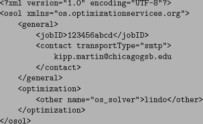

When the solve service method is used, the OSSolverService does not finish execution until the solution is returned from the remote solver service. The solve method communicates synchronously with the remote solver service and once started, these jobs cannot be killed. This may not be desirable for large problems when the user does not want to wait for a response. The send service method should be used when asynchronous communication is desired. When the send method is used the instance is communicated to the remote service and the OSSolverService terminates after submission. An example of this is
./OSSolverService -config ../data/configFiles/testremoteSend.configwhere the testremoteSend.config file is
-nl ../data/amplFiles/hs71.nl -serviceLocation http://gsbkip.chicagogsb.edu/os/OSSolverService.jws -serviceMethod sendIn this example the COIN-OR Ipopt solver is specified. The input file hs71.nl is in AMPL format. Before sending this to the remote solver service the OSSolverService executable converts the nl format into the OSiL XML format and packages this into the SOAP envelope used by Web Services.
Since the send method involves asynchronous communication the remote solver service must keep track of jobs. The send method requires a JobID. In the above example no JobID was specified. When no JobID is specified the OSSolverService method first invokes the getJobID service method to get a JobID and then puts this information into an OSoL file it creates and sends the information to the server. More information on the getJobID service method is provided in Section 10.3.4. The OSSolverService prints the OSoL file to standard output before termination. This is illustrated below,
![\begin{verbatimtab}[4]
<?xml version=''1.0'' encoding=''UTF-8''?>
<osol xmlns=''...
...ther name=''os_solver''>ipopt</other>
</optimization>
</osol>
\end{verbatimtab}](img148.png)
The JobID is one that is randomly generated by the server and passed back to the OSSolverService. The user can also provide a JobID in their OSoL file. For example, below is a user-provided OSoL file that could be specified in a configuration file or on the command line.
The same JobID cannot be used twice, so if 123456abcd was used earlier, the result of send will be false.
In order to be of any use, it is necessary to get the result of the optimization. This is described in Section 10.3.3. Before proceeding to this section, we describe two ways for knowing when the optimization is complete. One feature of the standard OS remote SolverService is the ability to send an email when the job is complete. Below is an example of the OSoL that uses the email feature.

The remote Solver Service will send an email to the above address when the job is complete. A second option for knowing when a job is complete is to use the knock method.
Note that in all of these examples we provided a value for the name attribute in the <other> element. The remote solver service will use Cbc if another solver is not specified.